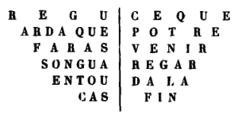

Le Suc de Bauzon. – Etymologie de Gerbier de Jonc. – L’ancienne forêt de Bauzon. – Les cheyres - Récolte de la framboise. – Retour en arrière. – La Gravenne de Thueyts. – La Gueule d’Enfer. – L’Echelle du Roi. – La fontaine de Luzet. – Thueyts en 1762. – Un futur railway entre le Pont de la Beaume et le chemin de fer de Brioude. – Le curé de Barnas. – Le nid de l’aigle. – St-Martin et le vieux Mayres. – La Vivaraise et la Peyrolade. – De Mayres à la Chavade. – Il faut des conducteurs prudents aux côtes rapides.
Le Suc de Bauzon, dont nous tournons la base pour entrer dans le bassin de la Loire, a une hauteur de 1,476 mètres. On y jouit d’une vue admirable qui s’étend bien loin vers le sud et qui n’est bornée à l’est que par la ligne des Alpes. Chauve du côté du Vivarais, il est boisé du côté de l’Auvergne. Son sommet est rouge comme Ayzac ou la Gravenne et semble une grenade ouverte vers la Loire. C’est de ce côté qu’a coulé le flot le plus puissant de ses laves.
A la cîme de la montagne est une large table de pierre où, d’après la tradition, venaient s’asseoir chaque année, en rendez-vous de chasse, les seigneurs de Montpezat, du Roux, des Usclades et de St-Cirgues, chacun d’eux se tenant sur son terrain.
Le Suc de Bauzon était aussi le rendez-vous des sorcières pour le Sabbat, et il est évident que la maréchaussée du temps devait avoir de la peine à les y relancer en hiver.
Suc vient évidemment du mot latin Jugum qui signifie cîme, sommet. Le montagnard vivarois dit encore : Je l’ai battu sur son suc, pour dire : je l’ai frappé sur la tête. Quand on a assommé quelqu’un, on dit qu’on la essuka. Le nom de Gerbier de Jonc a la même origine. Gerbarium Jugum fut traduit par Gerbier de Joug qui, par la parfaite similitude de l’u et de l’n dans les anciennes écritures, devint Gerbier de Jonc. La preuve matérielle de cette transformation se trouve dans l’ouvrage de Papire Masson : Flumina Galliœ, à la première page du chapitre consacré au fleuve Loire.
Le bois de Bauzon que nous traversons, n’est qu’une parcelle de l’ancienne forêt de Bauzon qui, ainsi qu’on peut le voir par la carte de l’ancien diocèse de Viviers, comprenait tous les bois compris entre Lanarce, les Usclades, Montpezat, la Souche, Valgorge, Loubaresse, St-Laurent-Les-Bains, St-Etienne-de-Lugdarès et le Plagnial. Le bois de Chambonnet où se trouve le Chadelbos, et le bois de Cuze entre Burzet et la Champ-Raphaël, figurent seuls sur cette carte, dans toute cette partie du Vivarais, comme distincts de la forêt de Bauzon.
Dès qu’on a tourné le Suc de Bauzon, on se trouve dans le bassin de la Loire.
C’est un changement à vue.
A la pente rapide, rocheuse, décharnée du Vivarais succède une pente douce, émaillée de cultures et de bois.
On entend les oiseaux dans les arbres jetant leur voix de soprano dans le grand concert que donnent la brise et le feuillage. Rien de plus frais, de plus vert et de plus riant. On croit entrer dans un autre monde. En effet, c’est bien un monde nouveau, grâce à la pente océanique, qui, se développant sur une espace quatre ou cinq fois plus étendu que le versant rhodanien, crée un régime de eaux tout-à-fait différent et sauve les montagnes de ces ravinements effroyables qui émiettent peu à peu les montagnes vivaroises.
Toute la montagne de Bauzon jusqu’à la Loire qui lui lèche les pieds est couverte de hêtres et de sapins à l’ombre desquels foisonnent les petits genièvres, les framboises et une foule d’arbustes.
Il y a bien ça et là quelques chiers ou cheyres, c’est-à-dire de ces grands tas de blocs détachés dont les innombrables cavités servent de retraite aux renards, mais le champ de blé, la prairie et le bois couvrent partout la contrée de leur robe verte.
Les cheyres elles-mêmes sont plus ou moins masquées par les framboisiers dont les racines plongent à de grandes profondeurs entre les rochers. C’est ce qui les protège contre le bétail.
La récolte de la framboise est pour les montagnards un produit qui n’est pas à dédaigner. La ville de Largentière reçoit, à elle seule, chaque année, du côté de la Souche, environ 3,000 kilogrammes de framboises (de 100 à 500 kilog. chaque lundi pendant neuf ou dix semaines). Joyeuse doit en recevoir autant et Aubenas le double ou le triple. Ce fruit se vend ordinairement de 50 cent. à 75 cent. le kilo.
Les écureuils et les geais abondent dans les bois de cette région et y font une guerre terrible aux nichées de serins et de chardonnerets.
Les grives grises appelées trides sont, avec les lièvres et les perdreaux, l’objet de prédilection de la poursuite des chasseurs. Il y a encore une grive presque noire, à collier blanc, mais qui paraît être de passage. Elle est plus petite et plus délicate et ne descend pas comme la tride jusqu’à Montpezat. Les grives sont friandes des baies de genièvre et des bais de toirier.
A droite, au milieu de la forêt, nous voyons s’ouvrir la route de St-Cirgues et nous apercevons au loin, adossé à la montagne de la Chavade, la belle forêt de Mazan.
J’ai parcouru depuis cette région que je ne pus alors admirer que de loin, et, comme le récit de ce second voyage vient naturellement compléter l’autre, mes lecteurs me permettront de le placer ici et de les faire rebrousser chemin jusqu’au Pont de la Beaume. Qu’ils se rassurent, la plume va plus vite que les chevaux, et nous ne mettrons guère à remonter la vallée de Mayres et à revenir par Mazan que le temps nécessaire à nos chevaux pour se reposer et se restaurer en broutant l’herbe parfumée du bois de Bauzon.
Le vieux pont en pierre du Pont de la Beaume, détruit par l’inondation de 1857 a été remplacé par un pont en fer, système américain, d’un effet fort original. Dès qu’on a passé sur la rive gauche de l’Ardèche, on aperçoit un récent écroulement survenu à la Chaussée des Géants et le noir brillant des décombres fait supposer qu’un filon d’anthracite a été mis à nu.
Nous remarquons aussi, un peu plus haut, de l’autre côté de la rivière, un pont récent superposé au vieux pont romain de Réjus sur l’Alignon, à l’effet d’y faire passer une nouvelle section de route qui relie directement Jaujac à Neyrac.
Le pic de Soulhol qui domine Neyrac, nous apparaît comme un moine vert coiffé d’un capuchon rouge.
Nous passons sous le château d’Hautségure et arrivons bientôt au hameau du Crouzet où sont les fabriques Tarandon. Je me souviens que visitant ces parages il y a une trentaine d’années, on montrait un léger filet d’eau minérale filtrant à travers les gneiss au-dessous de la route. Le propriétaire du terrain, nommé Giraud, a creusé dans la même direction au-dessus de la route et a trouvé à quatre ou cinq mètres de profondeur la source Bienfaisante dont j’ai déjà parlé à propos de Neyrac, et dont il met l’eau en bouteille avec de belles étiquettes aussi consciencieusement que le font les exploitants des sources les plus célèbres. Nous descendîmes dans la cabane située sur la route même et nous bûmes un verre de la Bienfaisante. Elle est gazeuse et agréable à boire, sans aucun goût particulier.
La route monte de Mateyre à Thueyts en suivant le pied de la petite Gravenne, nom donné au volcan de Thueyts, situé entre ce village et Meyras, pour le distinguer de la Gravenne, qui est située entre Thueyts et Montpezat.
La petite Gravenne n’a pas de cratère et l’amas de cendres rouges et de scories qui en indique la place est depuis longtemps couvert de vignes.
Ce nom de Gravenne est aussi donné à quelques volcans en Auvergne. On suppose qu’il vient des graves ou graviers qui sont l’accompagnement de toutes les bouches volcaniques.
A la cime de la montée, on traverse un pont jeté sur le ruisseau de Merdaric dont les eaux, grosses seulement en temps de pluie, forment la cascade de la Gueule d’Enfer. L’immense muraille basaltique qui soutient le petit plateau de Thueyts se présente ici sous la forme d’un plan très-fortement incliné et non moins bosselé, avec des arbres ou des herbes dans les rainures, le tout formant un ensemble des plus sauvagement pittoresques que l’on puisse imaginer surtout quand le torrent vient jeter avec fracas sur les laves noires sa colonne blanche que le rocher fait rebondir en mille nuages argentés.
Plus loin la muraille basaltique devient perpendiculaire et revêt un aspect grandiose. Dans une de ses fentes est l’escalier gigantesque, dont chaque degré est formé par une tête de prisme basaltique, qu’on appelle l’Echelle du Roi. Un charmant bois de châtaigniers, appelé la Condamine, couvre les bords du plateau du côté de l’Echelle du Roi et, quoiqu’appartenant à un particulier, M. de Blou, forme la plus jolie des promenades publiques de Thueyts, au moins pendant la belle saison.
Au bas de l’Echelle du Roi se trouve le domaine de la Vernède ainsi nommé probablement de son aspect verdoyant. Il y a là une prairie d’une fraîcheur inouïe grâce aux sources nombreuses qui viennent jaillir sous les basaltes et dont une ou deux sont minérales. Les arbres et les arbustes y sont couverts de plantes grimpantes qui établissent entre eux les arcs de triomphe et les festons les plus fantaisistes. Au printemps c’est une véritable orgie de végétation. Aussi l’auteur de l’Album du Vivarais a-t-il comparé cet endroit à Cythère, ce à quoi n’avaient jamais certes pensé les bons habitants de Thueyts. Le même auteur a donné le nom de Monts de Vénus à deux cônes charmants, derniers efforts des feux souterrains, qui ont poussé dans le lit de la rivière vers la Gueule d’Enfer. Quant au nom d’Echelle du Roi, en patois Eschalo dey Rey, je suis obligé de constater qu’il y a près de la Vernède un autre domaine dit du Rey qui, s’il n’avait pas une origine royale, permettrait de penser que la signification donnée jusqu’ici au grand escalier basaltique de la Condamine repose sur une sorte de calembourg et que l’Echelle du Roi n’est simplement que l’Echelle du domaine du Rey.
Il paraît qu’il existe d’autres sources minérales sur la rive droite de l’Ardèche en face de Thueyts, et l’on m’a même assuré qu’il y avait un endroit, au ravin dit du Costet, où l’on entendait comme des bruits de fuites de gaz sortant des fissures du rocher.
La source minérale la plus gazeuse et la plus appréciée de la commune de Thueyts est au hameau de Luzet, situé sur la rive droite de l’Ardèche, un peu avant d’arriver à Chadenac.
Dans une très-ancienne maison du hameau de Serrecourt – maison qui paraît être contemporaine de l’abbaye de Mazan, on voit une vieille inscription qui, au premiers aspect, semble de l’hébreu, mais qui, vue avec attention, laisse lire les mots suivants, taillés en relief dans une sorte de cœur ornementé formant l’écusson d’une cheminée :

Cette inscription, outre qu’elle est un des monuments assez rares de la langue romane, dans nos pays, prouve chez nos pères des habitudes de prudence et de sagesse auxquelles nous aurions grand besoin de revenir.
Le curé de Thueyts écrivait en 1762 :
« Le village a 360 feux.
« L’abbé du Monastier présente pour la cure. Il est seigneur justicier de Thueyts et du village de Bruc.
« M. de Blou est seigneur justicier de Chadenac et Serrecourt dont les autres villages et hameaux dépendent.
« Chadenac est un vieux château qui appartient à M. de Blou. Il est inhabité.
« M. de Fabrias, seigneur de Craux, a des domaines et des fiefs dans le territoire.
« On commence à travailler à une grande route.
« On trouve encore dans la paroisse des seigneuries directes appartenant à M. Delière, avocat à Villeneuve-de-Berg, à M. de Pourcheyrolles, au prieur du Gaudet et autres.
« La paroisse de Thueyts est divisée en trois mandements :
« 1e Celui de Thueyts où est l’église paroissiale qui renferme le village de Bruc possédant l’église de St-Chartre ; 2e celui de Chadenac ; 3e celui de Serrecourt qui comprend le Bouchet.
« Il y a encore le village de Barnas du mandement de Chadenac qui est de la paroisse de Mayres pour le spirituel.
« Deux consuls sont nommés dans le mandement de Thueyts et deux dans les mandements unis de Chadenac et Serrecourt. Ils sont élus pour un an mais ils durent pendant plusieurs années. »
La grand’route, dont il est question ici, est celle que les Etats du Languedoc firent construire pour établir entre Aubenas et le Puy par la Chavade des communications plus faciles que précédemment.
Quand il s’est agi de l’exécution du chemin de fer de Brioude, nous avons lutté dans les feuilles locales pour faire passer cette ligne par la haute vallée de l’Ardèche et par Aubenas d’où elle serait allée rejoindre Alais par Joyeuse et St-Ambroix. L’Etat, peut-être avec raison, préféra la ligne plus directe de Villefort, mais nous ne désespérons pas de voir réaliser un jour, à titre d’embranchement, ce que nous demandions alors, c’est-à-dire de voir relier le Pont de la Beaume à la ligne de Brioude par la vallée de Mayres.
En attendant de rouler en locomotive dans cette belle vallée, nous y roulions en voiture de toute la vitesse de nos deux chevaux entre les prairies qui bordent la rivière et les châtaigniers dont les phalanges serrées s’élèvent jusqu’aux deux tiers de la montagne, majestueusement dominées au sud par ce grand peigne granitique qu’on appelle le rocher d’Abraham.
En vue de Barnas, nous apercevons de l’autre côté de l’Ardèche, un débris de tour, habillé de lierre, se dressant au milieu de ruines informes : c’est tout ce qui reste de l’ancien château de Chadenac.
A Barnas, nous nous arrêtons pour saluer le vénérable curé Anjolras, le plus célèbre rebouteux de la contrée. Aussi loin que peuvent aller mes souvenirs, le curé de Barnas était déjà le grand chirurgien populaire du Bas-Vivarais. Toutes les fois qu’il se cassait un bras ou une jambe, on parlait, non pas d’aller chercher un médecin, mais de porter le blessé chez le curé de Barnas, et, neuf fois sur dix, c’est ce que l’on faisait.
L’abbé Anjolras, qui est curé à Barnas depuis 1822, est de Coucouron où il est né vers 1790. Il n’est donc pas jeune et on ne s’étonnera pas que nous l’ayons trouvé cloué à son fauteuil par les infirmités. Il put se lever, non sans peine pour nous recevoir, mais il lui est impossible de se tenir debout.
Nous causâmes un instant avec lui.
– Vous avez vu bien des malades, M. le curé, dans votre longue carrière.
– Oui, il en est bien passé peut-être quarante mille entre mes mains. Il est vrai, ajouta-t-il modestement, que beaucoup n’avaient rien ou pas grand-chose et ont été guéris sans moi.
Il nous apprit qu’il avait une sœur rebouteuse et c’est là évidemment ce qui avait déterminé sa vocation chirurgicale.
Le curé de Barnas exerçait depuis une dizaine d’années quand on l’obligea d’étudier l’anatomie, mais, ajouta-t-il, cela ne m’a servi à rien. J’avoue que ces paroles me choquèrent. Je comprends qu’à force d’expérience on acquière ce que l’abbé Anjolras appelle le don de remettre en place les membres luxés ou fracturés, mais il me semble que même pour les mieux doués la connaissance de l’anatomie ne peut être que profitable.
– Vous avez guéri beaucoup de pauvres diables ?
– Tant que j’ai pu ; mais je ne peux pas aujourd’hui me guérir moi-même.
C’est que l’âge est, en effet, la plus irréductible des fractures, puisque la mort seule en guérit.
En somme, le curé de Barnas a été un très-habile empirique qui a dû certainement faire bien des écoles a ses débuts mais qui, grâce à une aptitude particulière et à une pratique incessante, avait acquis une expérience rare. C’est cette pratique qui malheureusement nous manque à nous pauvres médecins de campagne, et – qu’on me permette de le dire ici en passant – il est extrêmement regrettable que nous ne puissions pas de temps à autre aller suivre, pendant un mois ou deux, la clinique des hôpitaux de Paris, de Lyon ou de Montpellier où nous verrions dans cet intervalle plus de cas, très-instructifs pour nous, que nous n’en voyons en vingt ans dans notre pratique provinciale.
Le curé de Barnas a une figure intelligente et bienveillante. A peine est-il besoin d’ajouter qu’il opérait gratuitement. Beaucoup de guéris laissaient seulement une modeste offrande à son église.
On apporte encore quelques blessés à l’abbé Anjolras. Il y avait là, au moment de notre visite, un petit garçon de dix ou douze ans qui avait fait une chûte et l’on supposait qu’il avait une côte fracturée. Le curé lui dit d’approcher pour le palper, mais le petit garçon, soit crainte de la douleur, soit timidité surexcitée par notre présence, se tint obstinément à distance.
– Faites appeler mon adjudant, dit alors le curé.
On alla chercher un voisin que le curé a initié à son art et qui probablement le remplacera un jour. Nous partîmes au moment où le voisin entrait, mais je crois bien, à l’attitude du petit malade et à sa respiration facile, qu’il n’y avait pas beaucoup à faire et l’air du curé me prouva qu’il était du même avis.
La vallée de Mayres a le privilège de posséder un nid d’aigle. Notez qu’il s’agit ici du grand aigle noir, et non pas de l’aigle criard assez commun en Vivarais et qui peut jusqu’à un certain point être apprivoisé. J’ai gardé pendant près de deux ans un aigle criard qui revenait tous les soirs se percher sur une treille de mon jardin et parfois me suivait comme un chien tandis que je taillais mes arbres ou que j’arrosais mes légumes.
L’aigle de Mayres vient des Alpes, à ce qu’on assure, pour nicher en Vivarais où il passe la belle saison aux dépens des moutons de l’endroit. On ajoute qu’il s’en retourne en hiver quand les moutons ne sortent plus. C’est un peu comme le troupeau du suffrage universel : plus il est nombreux et moutonnier, et plus il y a d’aigles pour s’engraisser à ses dépens.
L’aire de l’aigle n’est pas au rocher d’Abraham, comme on le croit généralement, mais dans un endroit beaucoup plus rapproché de l’Ardèche, au milieu d’une immense muraille rocheuse, inaccessible d’en bas comme d’en haut, qui forme une des parois d’un ravin entre Mayres et Barnas.
Les chasseurs de l’endroit vont quelquefois se poster dans les environs pour chasser l’aigle, mais je n’ai pas entendu dire qu’ils aient souvent abattu le tyran des airs.
Un paysan est parvenu une fois à s’emparer des petits aiglons par un moyen assez ingénieux. Il confectionna avec de vieux vêtements une sorte de pantin qu’il attacha à une longue corde, puis il monta au sommet du rocher et fit descendre le pantin dans l’aire. Les petits aiglons se jetèrent sur l’intrus, le griffèrent et le mordirent si bien qu’ils y restèrent empêtrés. Le paysan retira le pantin avec les aiglons, mais il est probable que si le couple royal l’avait aperçu, il aurait passé un vilain quart d’heure.
Les déprédations de l’aigle portent spécialement sur les troupeaux des propriétés voisines. Le fermier de Mme Rouchon (de la Souche) se faisait remettre toutes les années le prix de deux ou trois agneaux enlevés par l’aigle.
Mayres est dans la vallée de l’Ardèche ce qu’est Montpezat dans celle de Fontaulière, la dernière station avant de grimper la crête des Cévennes.
Le bourg principal de Mayres s’appelle St-Martin. L’habitant du pays tout au moins réserve le nom de Mayres à l’ancien village de Mayres (de matribus) qui, un peu plus haut sous les châtaigniers de la route, semble encore se dissimuler sous la protection du vieux château des Montlaur dont il reste une tour et quelques pans de murs ruinés. Le nom de ce village n’indique-t-il pas quelque culte très-ancien antérieur au christianisme, celui-là même auquel fait allusion le vers du poète : Diis matribus… ? Il paraît que les anciennes divinités appelées les mères, sans doute par antithèse, ressemblaient fort aux furies. Encore aujourd’hui mère en patois se dit mayre.
La seigneurie de Mayres appartenait à la puissante maison de Montlaur qui posséda si longtemps la baronie d’Aubenas. Il résulte d’une pièce assez curieuse que j’ai trouvé dans de vieux registres de notaire d’Aubenas que les habitants jouissaient, bien avant le 15e siècle, des libertés municipales.
Il y a deux sources minérales à Mayres que nous regrettâmes de ne pouvoir visiter, car elles sont à quelque distance de la route et nous ne pouvions nous arrêter que peu de temps.
L’une, appelée la Vivaraise, située sur la rive droite du ruisseau du vieux Mayres, appartiens à un nommé Chabert. Son débit est de 32 litres par heure. Elle sort d’un granit schistoïde et paraît avoir une certaine vertu laxative attribuée soit au protoxyde de manganèse, soit à la magnésie qu’elle renferme (1).
L’autre source, située au sommet de St-Martin, sur la rive gauche de l’Ardèche, à un kilomètre environ au-dessus de la route, a porté d’abord le nom de la Peyrolade. Elle fut achetée 200 ou 300 francs par MM. Dusserre, Pradal et Mariani, d’Aubenas, qui la baptisèrent successivement des noms de Noé et Clémentine. J’ignore le nom qui lui est resté. Elle avait été affermée 2,500 francs par an, mais le contrat n’a pas tenu.
De Mayres à la Chavade il y a onze kilomètres – onze kilomètres qui en valent bien trente ou quarante d’ailleurs, car la montée est des plus raides.
Nous rencontrons une grosse charrette de foin qui descend au grand trot d’un malheureux mulet stimulé par un jeune gars, à l’air mauvaise tête, malgré les cris et les jurons du père qui tient la mécanique. Celui-ci, finalement mis hors de lui par l’entêtement de son fils, profite d’un passage où le gravier fait l’office de frein, pour quitter son poste et aller prendre le mulet par la bride, non sans avoir appris à l’imprudent conducteur par un vigoureux coup de pied qu’on ne fait pas descendre ainsi aux grosses charrettes des pentes aussi raides.
Notre situation politique actuelle n’est-elle pas toute entière dans ce petit drame ? Voilà quelques années que la France descend sa côte de Mayres, aiguillonnée par des imprudents qui veulent courir là où il faudrait marcher avec précaution, malgré les avertissements des gens calmes et expérimentés occupés à serrer le frein et à donner des conseils qu’on n’entend guère. Gare le coup de pied final !
Les châtaigniers vont jusqu’aux deux tiers de la montée. Ici, comme dans la vallée de Fontaulière, de hautes murailles de rochers surplombent leurs dernières files. Puis viennent les pâturages. Il semble toujours qu’on va arriver au sommet de la montagne et à chaque détour on voit la route s’allonger indéfiniment. Il est six heures du soir, et nous n’avons encore fait que la moitié du chemin. Nos deux chevaux avancent, du reste, avec ardeur, stimulés par les mouches. Je croyais que les mouches ne dépassaient pas la région des châtaigniers, mais il paraît que la douceur de la température des décide à s’aventurer plus haut. Leur essaim bourdonnant voltige au soleil autour de la tête et du cou des chevaux.
Nous arrivons à la Chavade au crépuscule. C’est là que nous avions résolu de passer la nuit. Mais nous apprenons que, par suite de la mort récente du propriétaire, il n’y a plus d’auberge. Nous décidons alors d’aller coucher à Mazan. Fort heureusement notre jeune conducteur avait fait un mois auparavant le trajet de la Chavade à Mazan par la route forestière construite depuis quelques années. Nous pouvions donc espérer que, malgré la nuit qui commençait, il saurait retrouver son chemin et que nous avions quelque chance d’arriver sains et saufs. On nous avait dit, d’ailleurs, qu’il y avait à Mazan une bonne auberge. En route ! Et voilà nos chevaux secouant leurs grelots sur l’étroit sentier qui grimpe la crête dans la direction de Mazan, jetant dans un étonnement profond toutes les bêtes éparses dans les taillis de la montagne, car on n’avait certainement jamais vu une voiture s’engager dans ces parages à une pareille heure.
Nous ne rencontrâmes pas une âme dans tout le voyage.
Voici l’analyse d’après M. Bouis (1868) :
Rédidu insoluble . . . . . . . . . 0.020
Carbonate de soude . . . . . . . . 0.872
---- chaux . . . . . . . . 202
---- magnésie . . . . . . . 120
Sulfate de soude . . . . . . . . . 012
Chlorure de sodium . . . . . . . . 032
Oxyde de fer . . . . . . . . . . . 012
-------
1.290
M. Ossian Henri, dans une analyse faite en 1866, y avait trouvé diverses autres substances, notamment du bicarbonate de manganèse protoxydé.